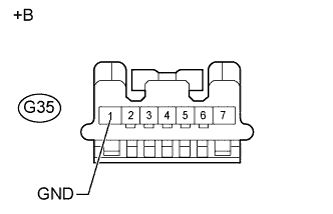
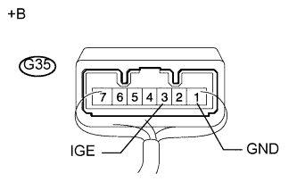

DTC B2782 Неисправность ЭБУ распределения питания |
| Код DTC | Условие обнаружения | Неисправный участок |
| B2782 | Неисправность цепи питания IGE |
|

| 1.ПРОВЕРЬТЕ ЭБУ БЛОКИРОВКИ РУЛЕВОГО УПРАВЛЕНИЯ |
|  |
Отсоедините разъем G35 ЭБУ блокировки рулевого управления.
Выключите зажигание, убедитесь, что рулевое управление разблокировано, и переведите рычаг переключения передач в положение P*.
Измерьте сопротивление в соответствии со значениями, приведенными в таблице ниже.
| Контакты для подключения диагностического прибора | Условие | Заданные условия |
| G35-1 (GND) - масса | Всегда | Менее 1 Ом |
| *a | Вид спереди разъема со стороны жгута проводов: (к ЭБУ блокировки рулевого управления) |
|  |
Подсоедините разъем G35 ЭБУ блокировки рулевого управления.
Измерьте напряжение в соответствии со значениями, приведенными в таблице.
| Контакты для подключения диагностического прибора | Условие | Заданные условия |
| G35-3 (IGE) - G35-1 (GND) | дверь водителя открыта | Менее 1 В (электродвигатель блокировки рулевого управления работает) |
| G35-3 (IGE) - G35-1 (GND) | дверь водителя открыта | 11-14 В (электродвигатель блокировки рулевого управления не работает) |
| *a | Устройство с подсоединенным жгутом проводов (ЭБУ блокировки рулевого управления) |
|
| ||||
| OK | |
| 2.УДАЛИТЕ DTC |
Удалите коды DTC (Нажмите здесь).
Отсоедините и подсоедините провод отрицательного (-) вывода аккумуляторной батареи, чтобы удалить данные о неисправностях (Power Supply Open).
| ДАЛЕЕ | |
| 3.СНИМИТЕ ПОКАЗАНИЯ ПОРТАТИВНОГО ДИАГНОСТИЧЕСКОГО ПРИБОРА (POWER SUPPLY OPEN) |
Проверьте коды DTC (Нажмите здесь).
Используя режим Data List, убедитесь, что управление блокировкой рулевого управления осуществляется надлежащим образом.
| Информация на дисплее прибора | Измеряемая величина / диапазон измерения | Нормальное состояние | Замечание по диагностике |
| Power Supply Open | Регистрация обрыва в ЭБУ / NG (PAST) или OK | NG (PAST): обрыв в ЭБУ ОК: неисправность отсутствует | - |
| Результат | Следующий шаг | |
| А | |
| для моделей с наклонной телескопической рулевой колонкой с ручным приводом | B |
| Для моделей с наклонной телескопической рулевой колонкой с электроприводом | C | |
|
| ||||
|
| ||||
| А | ||
| ||
| 4.ПРОВЕРЬТЕ ЖГУТ ПРОВОДОВ И РАЗЪЕМ (ЭБУ БЛОКИРОВКИ РУЛЕВОГО УПРАВЛЕНИЯ – ЭБУ РАСПРЕДЕЛЕНИЯ ПИТАНИЯ) |
Отсоедините разъем G51 ЭБУ распределения питания.
Отсоедините разъем G35 ЭБУ блокировки рулевого управления.
Измерьте сопротивление в соответствии со значениями, приведенными в таблице ниже.
| Контакты для подключения диагностического прибора | Состояние | Заданные условия |
| G35-3 (IGE) - G51-8 (SLR+) | Всегда | Менее 1 Ом |
| G35-3 (IGE) или G51-8 (SLR+) - масса | Всегда | 10 кОм или более |
|
| ||||
| OK | ||
| ||